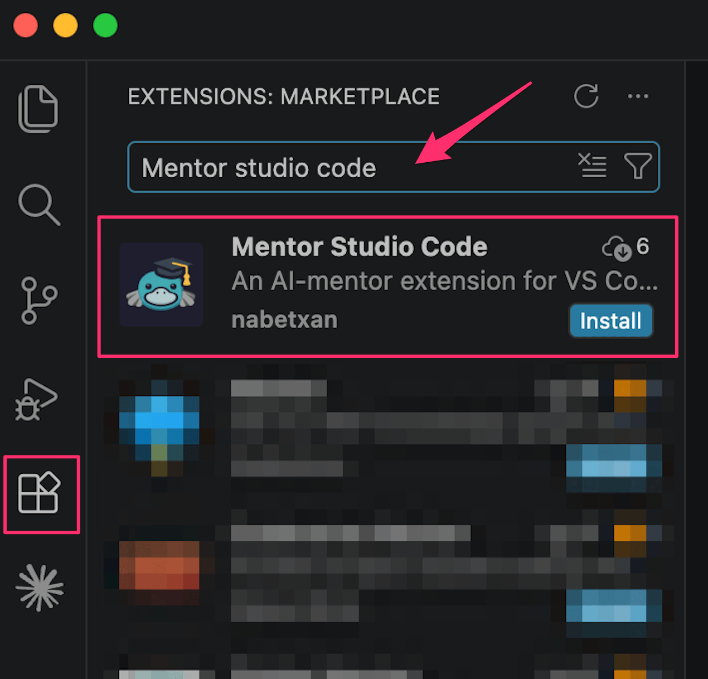
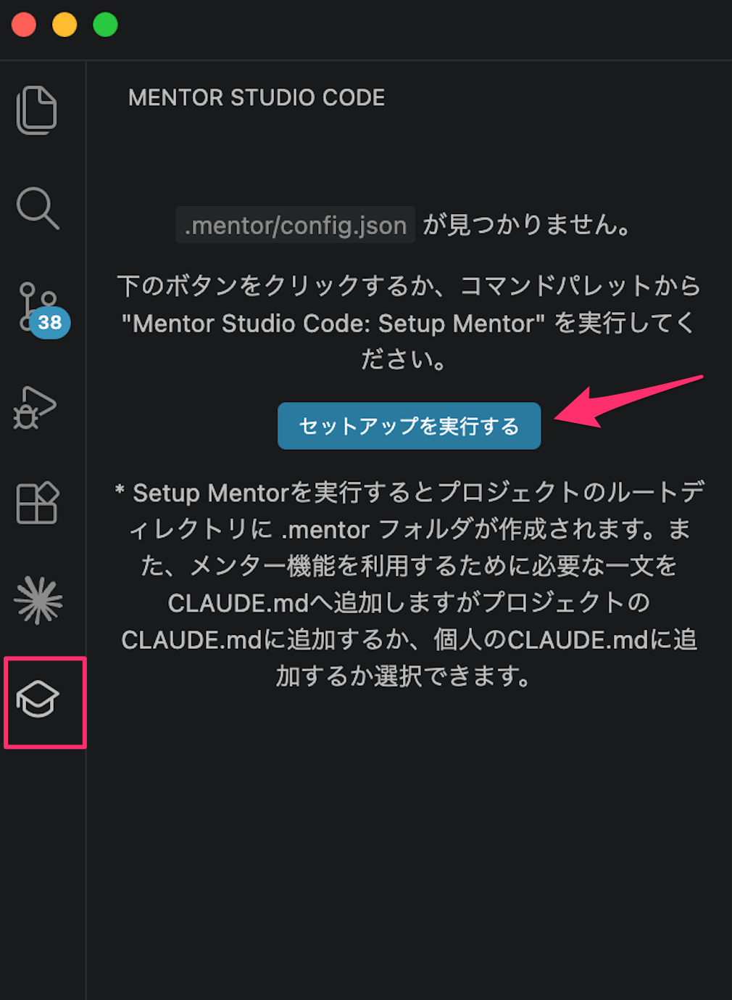
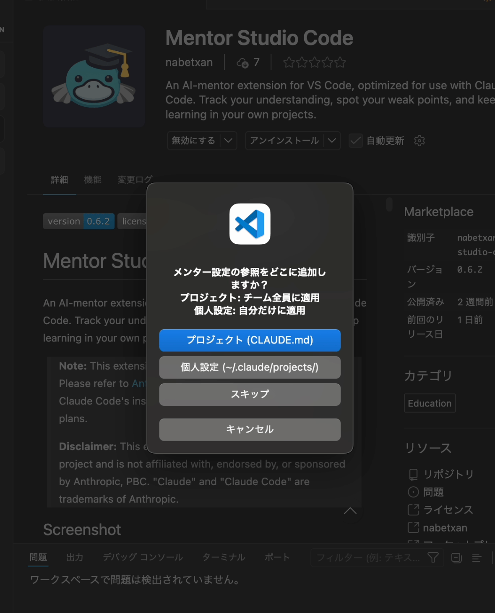
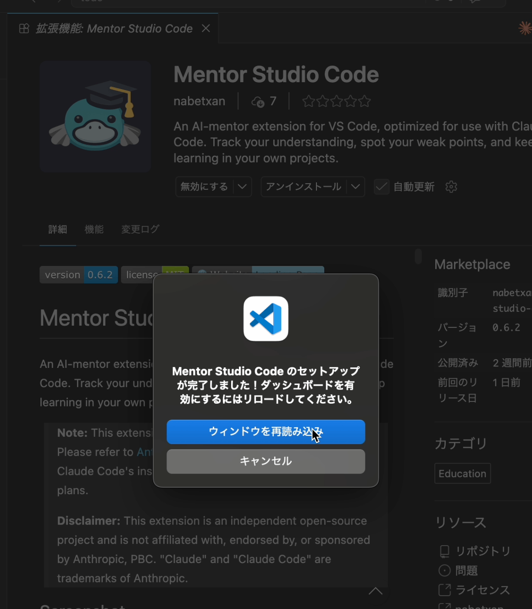
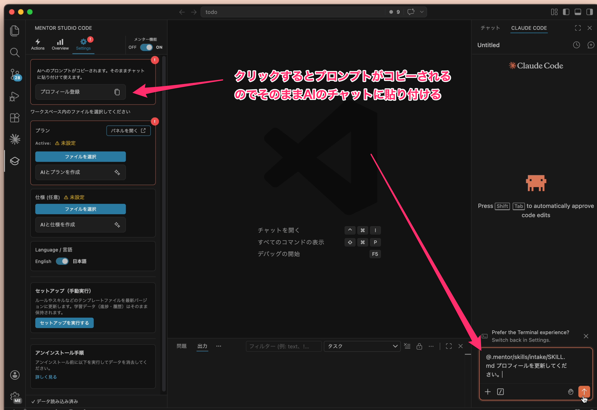
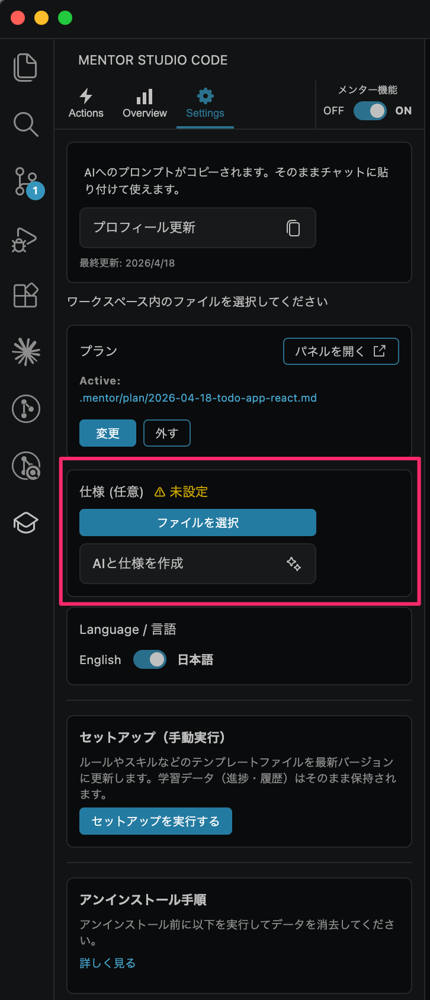
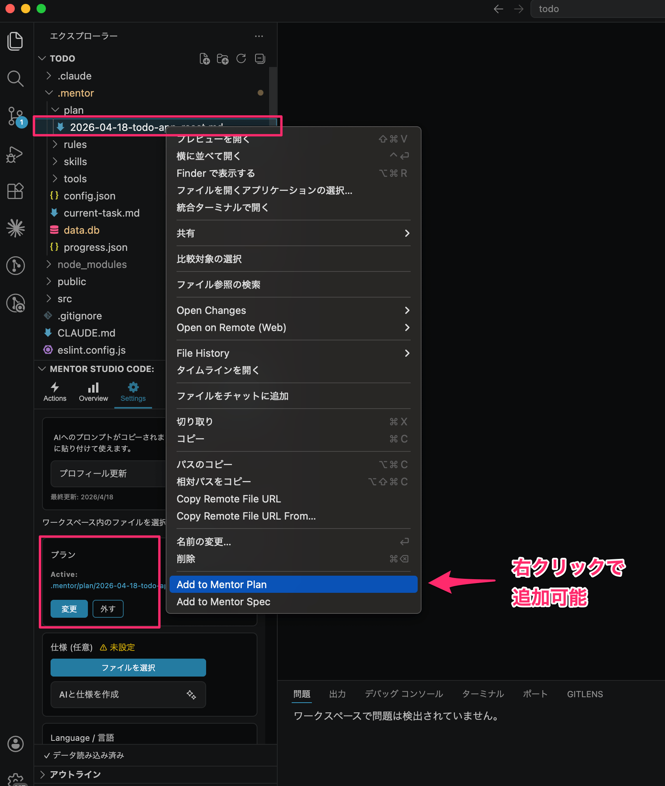
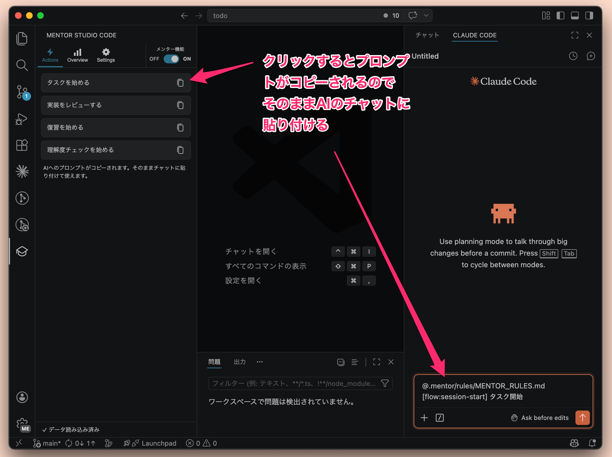

① 初回セットアップ
インストールしてメンターが使える状態になるまでの7ステップ。Setup では CLAUDE.md / AGENTS.md のどちらを使うか選べます。
拡張をインストール
VS Code の Extensions タブで「Mentor Studio Code」を検索してインストールします。Marketplace ページから直接インストールすることもできます。

Setup ボタンを押す
Activity Bar の Mentor Studio Code アイコンをクリックし、Setup ボタンを押します。サイドバーにアイコンが見当たらない場合は、コマンドパレット（Cmd+Shift+P）から「Mentor Studio Code: Setup Mentor」を実行してください。

エントリポイントを選ぶ
Mentor を使うエントリポイントとして CLAUDE.md / AGENTS.md を選択します。CLAUDE.md を選んだ場合は、プロジェクト共通の CLAUDE.md か個人用 CLAUDE.md のどちらに参照を追加するか続けて選べます。AGENTS.md を選んだ場合は、プロジェクトの AGENTS.md に管理対象の Mentor ブロックが追加されます。

Reload Window を押す
セットアップ完了後に表示される「ウィンドウを再読み込み」ダイアログをクリックします。リロード後、自動でダッシュボードが開きます。

プロフィール登録
Settings タブの「プロフィール登録」ボタンを押すとプロンプトがクリップボードにコピーされます。そのまま設定済みの AI ツールに貼り付けると、AI が対話でレベル・興味・メンタースタイルを聞き取りながらプロフィールを登録します。

仕様（Spec）を紐付ける（任意）
すでに仕様ドキュメントがある場合は、Settings タブの「仕様」カードの「ファイルを選択」ボタンから選ぶか、Explorer でファイルを右クリックして「Add to Mentor Spec」を選びます。任意項目なのでスキップしても構いません。

プラン（Plan）を紐付ける（必須）
プランはメンターセッションの進行に必須です。すでにプランファイルがある場合は、Settings タブの「プラン」カードの「ファイルを選択」ボタンから選ぶか、Explorer でファイルを右クリックして「Add to Mentor Plan」を選びます。まだプランがない場合は「AIとプランを作成」ボタンから AI に生成を依頼できます。

② 1セッションの流れ
Actions タブからプロンプトをコピーして、設定済みの AI ツールでメンターと対話する1回の学習サイクル。
Actions タブで「タスクを始める」をコピー
ダッシュボードの Actions タブを開き、「タスクを始める」ボタンを押してプロンプトをクリップボードにコピーします。用途に応じて「実装をレビューする」「復習を始める」「理解度チェックを始める」も選べます。

AI ツールに貼る
コピーしたプロンプトを、設定済みの CLAUDE.md / AGENTS.md を読んでいる AI ツールに貼り付けて送信します。メンターセッションが開始されます。
メンターの質問に答える
メンターがあなたの理解度を確認する質問を投げかけてきます。自分の言葉で答えてみましょう。間違えても、ヒントをくれます。
フィードバックを受ける
答えに対してメンターがフィードバックを返します。合っていれば次に進み、間違っていればヒントやサブクエスチョンで理解を助けてくれます。
Overview タブで進捗確認
ダッシュボードの Overview タブで、現在のタスク・正答率・トピック別進捗を確認できます。苦手なトピックの復習もここから始められます。